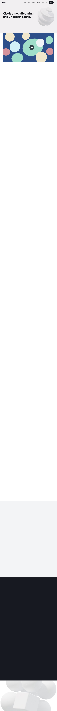
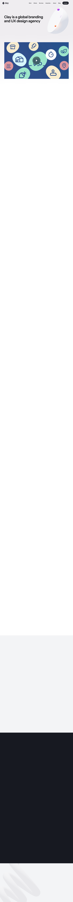

AI 生成页面的错误不报错：字体拿不到就悄悄换一个，容器装不下就悄悄溢出去，栅格坏了就悄悄挤成一列。页面越生成越多，人肉逐页检查的成本，正在吃掉 AI 省下的时间。
字体没加载成功，浏览器默默换成备选——字宽变了，所有度量随之漂移。
文案比设计长一点，就挤出容器边界。截图看不出，真机上就是破版。
一条样式覆盖，八列的元素塌成一列——DOM 里查不出任何「错误」。
下面每套参数，取自我们逐像素重建过的一家顶级设计工作室（重建保真 0.9+）。点击切换：整页实时重排——网格、字级、色彩、圆角一起换，右上角的验收徽标同步复验。契约不因换肤而松动。
说明：这演示的是版式的参数化与验收的稳定性——审美判断仍属于人；哪套「更好看」，正是我们下一步用真人盲评去回答的问题。

三个按钮各制造一种真实事故（作用于本页）；「尝试发布」走引擎发布门禁的同一套校验，有错就拒绝发布；「修复」还原。字体那一刀肉眼几乎看不出来——你看不出来，验收器看得出来。
用格律 v2 重建 clay.global 首页：动手之前先把通过线写死在 0.65，重建完成后与原站像素相似度 0.989。通过线预注册、时间戳可查——这也是「换版式」里那些工作室参数的来源。

原站截图版权归 clay.global 所有，仅作研究对比。保真度衡量像素相似度——布局能力的证据，不是审美评分。
因为我们把「打分」亲手证伪了：一个约 25 行、只会把间距凑成整数的投机脚本，在网格指标上拿了 78.70——高过我们 1535 行的引擎（67.73），也高过顶级人类名站的组均值（72.98）。任何确定性的美学分数都会被刷穿。
确定性属于契约（保下限），不属于审美（打分）。所以格律只拦客观错误、只警告不强制风格；「美」的上限，我们用真人盲评验证过的信号去逼近——那也是「换版式」之后的下一步。